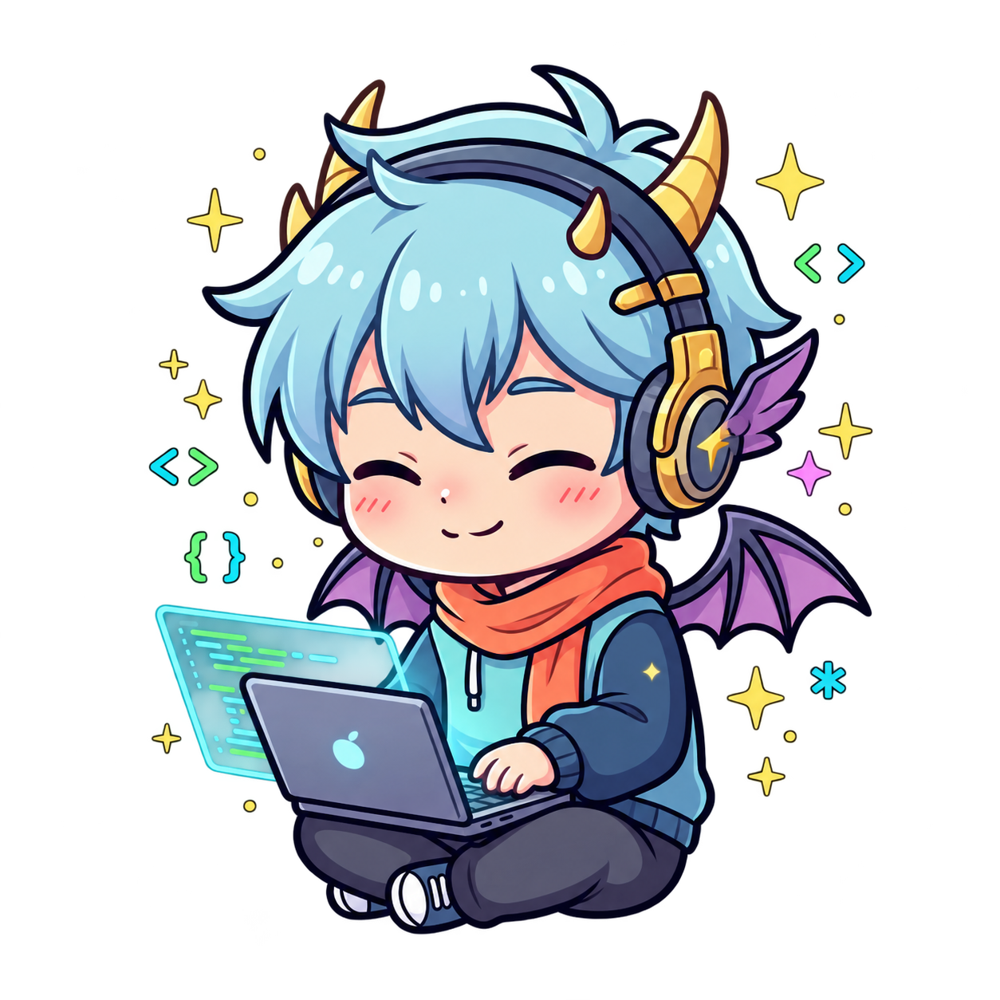

RMNDT2
Armando
- 💻
- ⚖️
- 🐉
- ✨
Programador autodidacta y estudiante de Derecho La selección natural no me ha eliminado y seguiré adelante. Hola, personita desconocida, espero que te guste mi página. :D

RMNDT2
Programador autodidacta y estudiante de Derecho La selección natural no me ha eliminado y seguiré adelante. Hola, personita desconocida, espero que te guste mi página. :D
Lo que juego, lo que escucho y lo que hago en mi tiempo libre.
Una vez me salió un token y, cuando quise tomarle foto, la animación ya había pasado. Para la próxima, mejor dejo grabando.